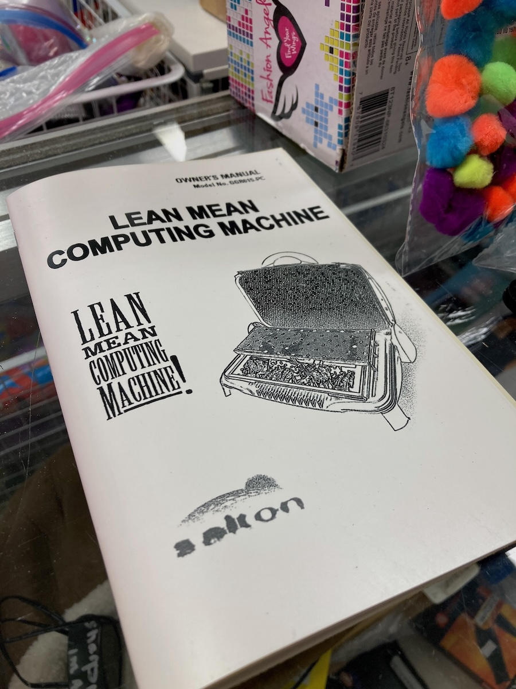
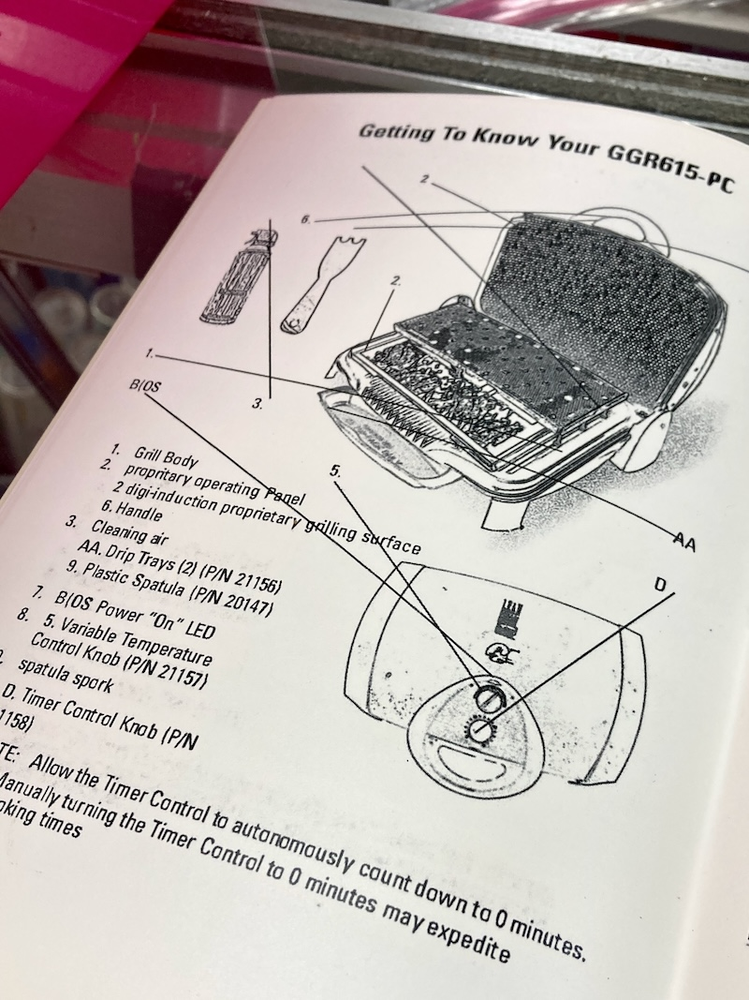
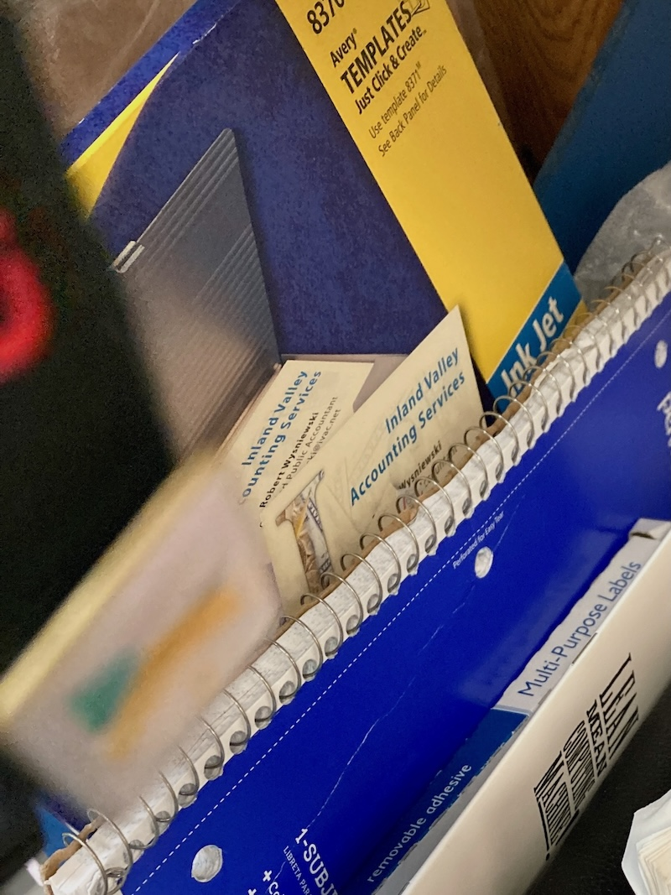
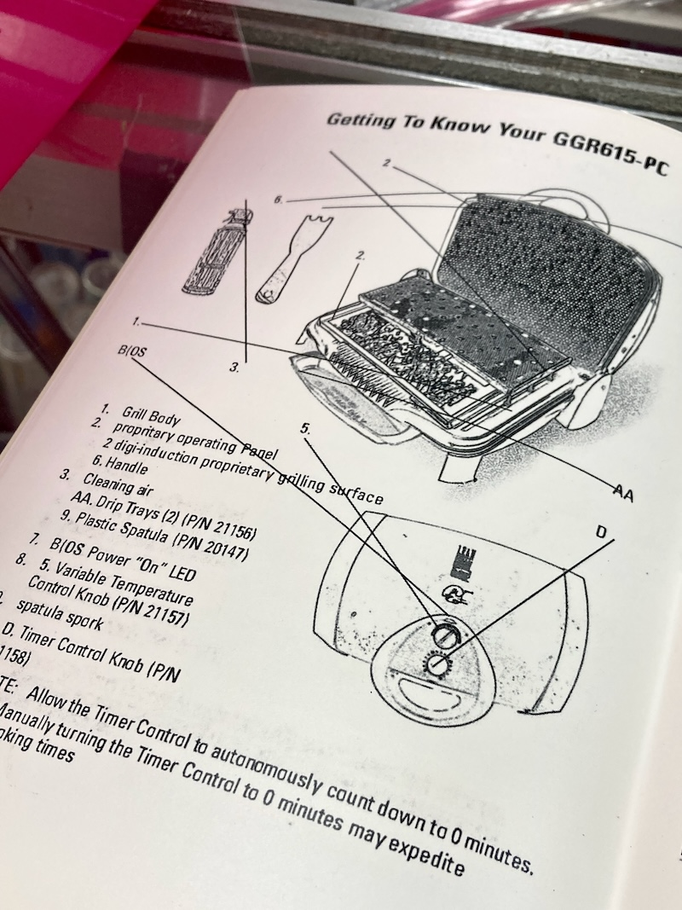
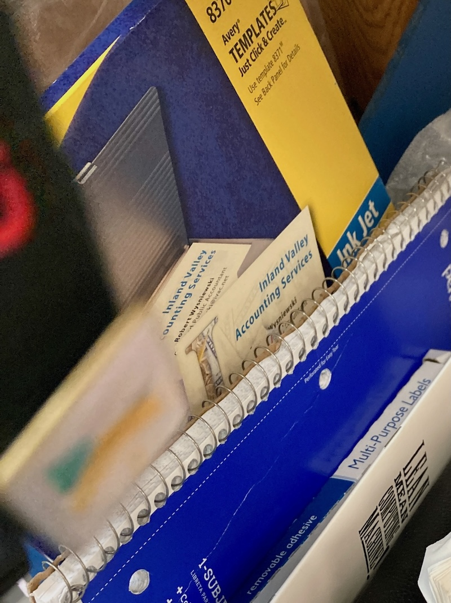
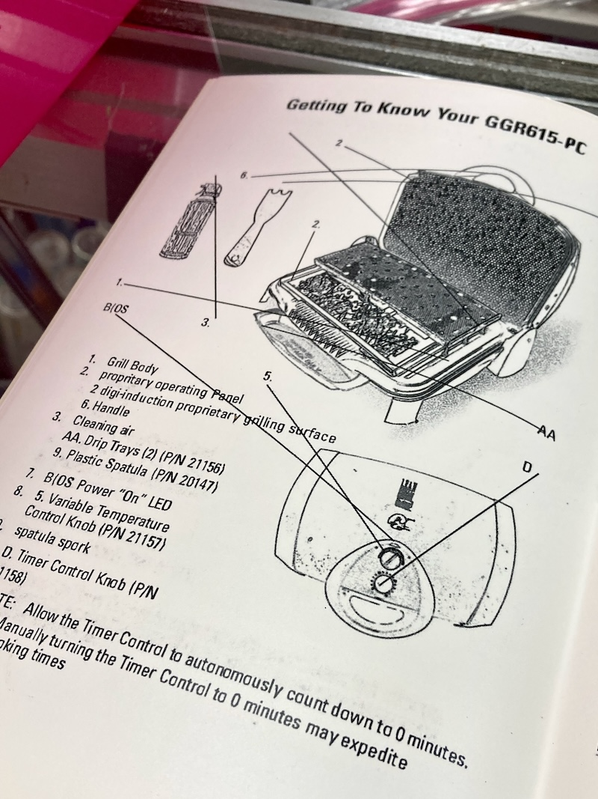
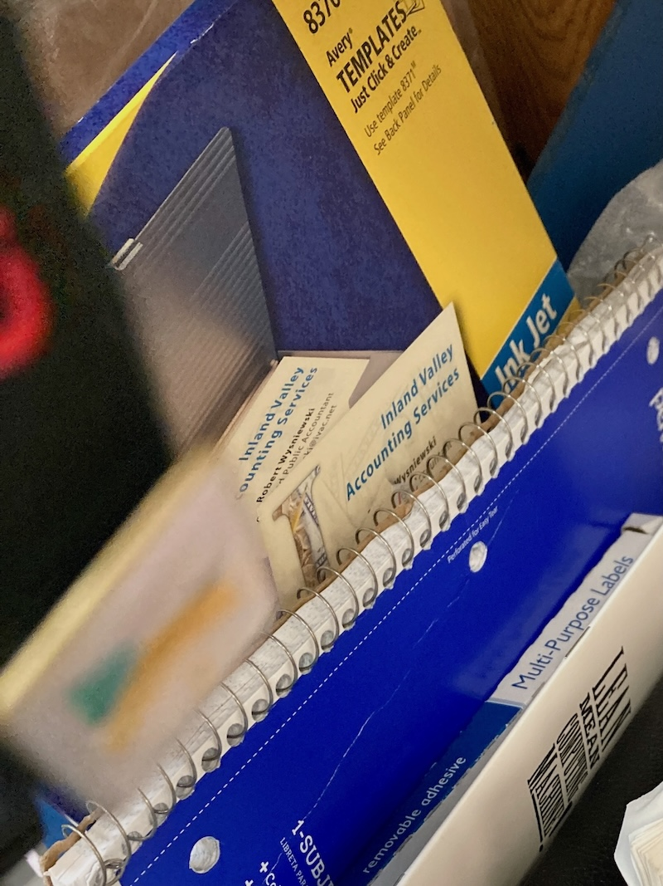

Model No. GGR615-PC Owner's Manual
A user manual for a George Foreman Computer by Doug MacDowell artist
Year: 2023
Made with: TESLIN® substrate, accounting paper, and XEROX machine
Featured:
- Clark County Zine Club Juried Exhibition, Clark County Public Arts at Winchester-Dondero Gallery, Juror: Jeffrey Bennington Grindley, Las Vegas, Nevada
- The Media Archaeology Lab, ephemerMAL zine #4, Boulder, CO, 2023

 






